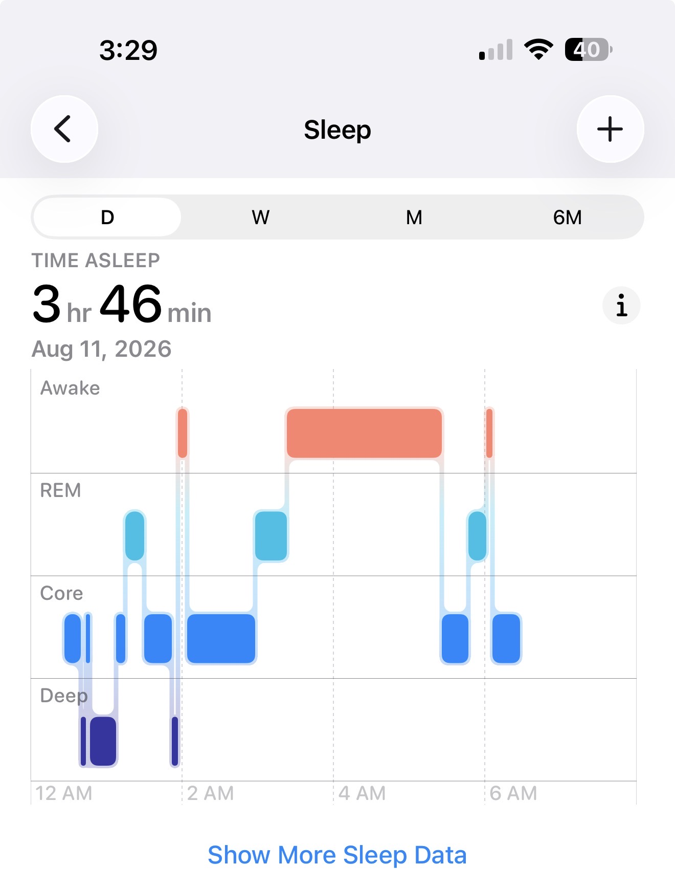

September 2026
iOS & Apple news
Today, Apple held its September event. You can watch the whole thing:
Apple introduced: The iPhone Duo, the iPhone 18 Pro (and Pro Max), AirPods 5, new Apple Watch Series 12 and Ultra 4.
Here is Apple's own quick summary of announcements (1:35 mins):
Apple's summary: `Watch a quick Apple Event recap to learn about iPhone Duo, iPhone 18 Pro, Apple Watch Series 12, Apple Watch Ultra 4, and AirPods 5. iPhone Duo is the first foldable iPhone, with the largest iPhone display ever and reimagined iOS experiences like side-by-side multitasking. iPhone 18 Pro has a new 48MP Fusion Main camera with a new variable aperture for improved low-light photos and impressive depth of field. And the powerful A20 Pro chip, which was built for Al and gaming. iPhone 18 Pro Max has the longest battery life in iPhone history. Apple Watch Series 12 and Ultra 4 now have the most accurate heart rate sensing in a wearable. Both unlock new features like high-frequency heart rate tracking, heart rate variability tracking in daytime vitals, and a readiness score that lets you know when to rest or put yourself to the test. With AirPods 5, discover the magic of the best Active Noise Cancellation in an open-ear design. And Siri AI is an entirely new version of Siri powered by Apple Intelligence. Siri AI is more personal and more capable — drawing on your personal context and taking action across your apps to help you find what you need and get more done.'
MacRumors has also created a summary of today's announcements.
Here is tech journalist Marques Brownlee demonstrating the Duo's animation.
Here is the new iPhone Pro and Pro Max:
Description: `iPhone 18 Pro is Apple’s most powerful iPhone yet. It features the A20 Pro chip, which has exceptional AI capabilities and is cooled by a next-generation vapor chamber. It delivers the longest battery life ever in an iPhone — 6 more hours of video playback on iPhone 18 Pro Max compared with iPhone 17 Pro Max. A Pro camera system with variable aperture, greater depth of field, and better-quality low-light photos. And Siri AI, your more personal, more powerful AI assistant.'
It can be pre-ordered starting 5:00 a.m. PT on 9.12 Available starting 9.18. Learn more about the new iPhone 18 Pro. You can also compare pricing info.
A20 Pro chip
— Marques Brownlee (@MKBHD) September 9, 2026
- 2nm process node
- 6-core CPU
- 7-core GPU
- Doubled 32-core neural engine
- 50% more memory bandwidth pic.twitter.com/zHpT1Eoysr
iPhone 18 Pro! Everything you need to know. Stay tuned for my hands-on impressions soon. pic.twitter.com/s3bwIN7ln5
— Joanna Stern (@JoannaStern) September 9, 2026
Here is the portion of today's event on the new iPhone 18 Pro (24 mins):
Description: `iPhone 18 Pro is purpose-built for unprecedented performance, featuring the vapor-cooled A20 Pro chip and exceptional AI capabilities. It delivers the longest battery life ever in an iPhone* — 6 more hours of video playback on iPhone 18 Pro Max compared with iPhone 17 Pro Max.** A new 48MP Fusion Main camera with variable aperture for improved low-light photos and videos and impressive depth of field. Available in four colors: Burgundy, Glacier, Silver, Black.'
Here is the new iPhone Duo:
Description: `iPhone Duo is a foldable iPhone with the largest iPhone display ever and reimagined iOS experiences for unprecedented versatility, including side-by-side apps for multitasking, hands-free FaceTime calls, and flexible viewing. It features an inner display that’s 50 percent larger than iPhone 18 Pro Max, a titanium frame, a 48MP Dual Fusion camera, all-new ways to shoot, the A20 Pro chip, a dual-battery system for all-day power, and Siri AI, your more personal, more powerful AI assistant.'
You can pre-order starting 5:00 a.m. PT on 10.16 Available starting 10.23. Learn more about the iPhone Duo. Also compare pricing.
iPhone Duo
— Marques Brownlee (@MKBHD) September 9, 2026
- 7.6" inner display with under-display selfie camera
- 5.4" outer display (1x1.4 aspect ratio)
Apple Pencil "later this year" will work on either display
Lots of clever and thoughtful software features. Easily the audience favorite right now is the animation when you open/close the phone pic.twitter.com/iEIyFZDni7
— Marques Brownlee (@MKBHD) September 9, 2026
A big part of the visual minimization of the crease comes from the custom nanotexture matte finish that reduces reflections. Then carbon fiber support plates inside the hinge. Obviously not a hint of crease in these videos, but looking forward to seeing it in person soon 👀 pic.twitter.com/96AYTiOuNl
— Marques Brownlee (@MKBHD) September 9, 2026
iPhone Duo is ESIM only worldwide to maximize battery. The split batteries should get "31 hours of video playback on inner display and 44 hours from the outer display"
— Marques Brownlee (@MKBHD) September 9, 2026
iPhone Duo is ESIM only worldwide to maximize battery. The split batteries should get "31 hours of video playback on inner display and 44 hours from the outer display"
— Marques Brownlee (@MKBHD) September 9, 2026
Apple explains what is inside the iPhone Duo's Folding Screen.
Got my hands on the iPhone Duo. So far, the internal screen is really impressive, but stay tuned for my longer hands-on video soon! pic.twitter.com/yr9W8evvM5
— Joanna Stern (@JoannaStern) September 9, 2026
Got my hands on the iPhone Duo. So far, the internal screen is really impressive, but stay tuned for my longer hands-on video soon! pic.twitter.com/yr9W8evvM5
— Joanna Stern (@JoannaStern) September 9, 2026
Here is the portion of today's event on the new iPhone Duo (23 mins):
Description: `iPhone Duo is the first foldable iPhone, featuring the largest display ever and reimagined iOS experiences for unprecedented versatility, including side-by-side apps for multitasking, hands-free FaceTime calls, and flexible viewing. The titanium frame and hinge cover make it beautiful and durable. With a 48MP Dual Fusion camera system, A20 Pro chip, and all-day battery, it's an iPhone unlike any iPhone.'
This iPhone duo animation pic.twitter.com/y7NftWpyXS
— Marques Brownlee (@MKBHD) September 9, 2026
Here is a link to compare iPhone models, including your current iPhone if you are curious.
iPhone Duo Will Ship With iOS 27.1, Hinting at Update's Release Date, Apple says the iPhone Duo will ship with iOS 27.1 when it launches this October, which gives us a hint at when the first major iOS 27 update will come out., reports Macrumors.
Here's What Apple Says About the iPhone Duo's Crease, reports Macrumors.
Hands-On With the iPhone Duo: The Crease is Still There, But Barely, reports Macrumors. iPhone Duo Hands-On: I’m VERY Impressed, they say. Watch their video:
Apple also introduced AirPods 5, with noise cancellation, starting at $129, available on 9/18.
Here is a 50-sec view of the new AirPods 5:
Here is the portion of today's event on the new AirPods 5 (5 mins):
Description: `AirPods 5 deliver up to 1.5x more Active Noise Cancellation than the previous generation, with a redesigned acoustic architecture for richer, more detailed sound. Transparency lets you hear the world around you. Personalized Spatial Audio places sound all around you. Live Translation helps you communicate across languages. And you get hands-free access to the new Siri AI, an even more powerful and personalized AI assistant on your iPhone. Available in two models. Listen for hours with AirPods 5. And AirPods 5 with Wireless Charging Case add up to an extra hour of battery life on a single charge. Best Active Noise Cancellation in an open-ear design evaluation tested in July 2026 in accordance with IEC 60268-24 as compared with best-selling commercially available wireless open-ear headphones without ear tips. Up to 1.5x more Active Noise Cancellation compared with AirPods 4 with Active Noise Cancellation when tested in accordance with IEC 60268-24. Personalized Spatial Audio works with compatible content in supported apps. iPhone with TrueDepth camera required to create personalized profile, which will sync across compatible Apple devices. Personalized Spatial Audio is not available when using other devices. Live Translation is available on compatible Apple devices with the latest operating system software when paired with compatible AirPods with the latest firmware when Apple Intelligence is turned on. Not available in all languages and regions.'
AirPods 5
— Marques Brownlee (@MKBHD) September 9, 2026
- Same open ear fit, redesigned on the inside
- Next gen adaptive EQ - richer, more detailed sound
- 50% more Active Noise cancellation than last gen
- 4 hour battery life with ANC
- $129, same as last year’s non-ANC AirPods
- Higher end version with longer battery…
Apple also introduced the new Apple Watch Series 12:
Description: `Apple Watch Series 12 has the most accurate heart rate sensing in a wearable. Unlock new features like high-frequency heart rate tracking, heart rate variability in daytime vitals, and a readiness score that lets you know when to rest or put yourself to the test. And now every day feels more effortless with Siri Al and Audio Intelligence. Apple Watch is the ultimate device for a healthy life, with features like sleep score, cycle tracking, and in-depth workout metrics. It’s built to go all day with up to 24-hour battery life, a wide-angle Always-On Retina display, and superdurable Ceramic Shield 2 on aluminum cases.'
Available starting 9.18, starting at $399. Learn more about Apple Watch Series 12.
Apple Watch Series 12 Comes in New Finishes, Including Ceramic, reports Macrumors.
Apple Watch Series 12 and Ultra 4 Get Wave of New Bands, reports Macrumors.
Apple Watch Series 12 and Ultra 4 have the same designs, but new silicon and improved sensor arrays for WAY more frequent heart rate polling
— Marques Brownlee (@MKBHD) September 9, 2026
Background heart rate reading every 5 seconds all day long (60x more than before)
HRV every 5 minutes (24x more frequent than before)…
The new Apple health app is redesigned with Apple Intelligence so you can actually get personalized guidance on all that data. Finally
— Marques Brownlee (@MKBHD) September 9, 2026
There's even a new "Health Age" metric... sound familiar? @WHOOP https://t.co/hcTCRpaR56
Here is the portion of today's event on Apple Watch Ultra and Series 12, introduced by John Ternus, Apple's new CEO (14 mins total):
Description: `Apple Watch Series 12 and Apple Watch Ultra 4 feature the most accurate heart rate sensing in a wearable.* Unlock new features like high-frequency heart rate tracking, heart rate variability in daytime vitals, and a readiness score that lets you know when to rest or put yourself to the test. And now every day feels more effortless with Siri Al and Audio Intelligence. Apple Watch Ultra 4 takes the ultimate running smartwatch even further with extended battery life, game-changing fitness tracking, and precision dual-frequency GPS.'
iOS 27 Will Let You Redeem Apple Gift Cards on the Back of Your iPhone, reports Macrumors.
iOS apps
Olga reported being on an app diet the last couple of months. ;-)
podcasts
Best selling cookbook author Ina Garten is starting a new podcast, titled Happy Hour with Ina Garten.
Garten's new podcast will be available via all podcast apps, but also on Youtube, as a video podcast.
Tech journalist Kara Swisher interviewed Ina Garten in a recent podcast episode. It's a good conversation about podcasting, how media outreach has evolved, and about what has driven Ina Garten's successful career.
tips & tricks
A reminder: How to Use On-Screen Visual Intelligence on iPhone.
watch
Recently, Apple posted this from an Apple Watch user named Amanda. Amanda’s Apple Watch flagged changes in her resting heart rate and overnight vitals, she saw her GP. Doctors uncovered a rare, aggressive cancer and began life-saving treatment just in time.:
Olga shared her dogs' health challenges the past 4-5 weeks which have resulted in sleep challenges every few days, sometimes nightly. The vet did not fully appreciate how intense the dogs' health problems have been until Olga shared this image from her Apple Watch and iPhone health data:

After seeing this in an email, the vet fully digested the impact of the dogs' health problems. The vet prescribed medications for the dogs and their health has gradually improved. This is probably an unusal application of a human's Apple Watch sleep data, but it has far reaching uses!
next iPUG
Question to the group about moving our iPG meetings to the 2nd Tuesday of each month. This avoids election day, days around 4th of July, Labor Day, and the beginning of the year in January when often people travel. Seeking input from iPUG members.